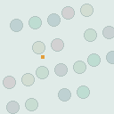

QUESTION → DIAGNOSIS → HYPOTHESIS → COMPARISON
小さなBBoxは、どの段階で失敗するのか。
「小さいから見えない」で終わらせない。候補位置・BBoxの品質・スコア・正例割当を独立して操作し、4出力値から別の回帰表現を自分で設計します。
Synthetic fixture / YOLOX P3~P2 stride / 1 GT / Geometry center radius 1.5

SYNTHETIC 4 px OBJECT候補BBox、Objectness、Classificationの値は教材用の人工値であり、学習済み頭部検出モデルの予測ではありません。GTも実在人物のラベルではありません。Signed LTRBの優位性は未検証であり、結論として扱いません。
INTERACTIVE INVESTIGATION
見失った位置を、1段ずつ追跡する
入力の条件を変えると、正例候補・IoU・スコア通過の違いがリアルタイムに再計算されます。
01 / 候補が存在するか？
128×128・GTは合成四角形Grid と BBox
黄=GT / 緑=正例 / 青=幾何候補これまでに分かったこと
読み込み中…
幾何候補は固定式で判定し、Score閾値は画面表示用です。SimOTAの内部Costや正例割当を閾値で変更しません。実装系統は教科書に記載しています。
02 / BBox品質とScoreを分解する
人工候補・1 GT・クラス1個同じ位置に良いBBox候補があっても、Objectnessが低ければ閾値を通過しない場合があります。候補があることと正式検出は別です。
| 候補格子 | IoU | Objectness | Classification | Score | SimOTA Cost | 割当 |
|---|
03 / 4出力値を使って別のBBox回帰を設計する
比較は仮説提出後に公開各格子からの出力は4値です。従来の (tx, ty, tw, th) 以外に、極小BBoxを表せる式を考えてください。予測矩形が正しい順序を保つか、微分がどう変わるかも確認します。
比較：YOLOX標準 / Signed LTRB / 順序保証方式
参照するGTは上の合成四角形、参照点はもっとも近い格子中心です。幅方向の摂動は、それぞれのrawパラメータに加えます。単位が異なるため、スライダー数値の直接比較から優劣を判断しないでください。
w=stride·exp(tw)—x2=refx+r—例：w=softplus(u)+ε。正の幅は保証されますが、改善効果は未検証です。
この比較はパラメータ表現の数学だけです。 Loss、optimizer、学習時間、データ分布、計算負荷を揃えた学習実験を実施しない限り、Signed LTRBの改善は主張できません。
04 / 正式な学習画像とラベルへの更新
後日のユーザー提供データに備える教材が一通り揃った段階で、提供される画像・BBoxラベルを正式版へ差し替える計画です。現在の公開教材には合成データを残し、正式データの投入時に明確に切り替えます。
ローカル変換ゲート
COCO形式の画像・ラベルをローカルで読み込み、BBoxの範囲、カテゴリ、重複、画像の存在、分割間リーク、利用権利を検査します。素材の自動アップロードは行いません。
ラベルの最低限の仕様
1枚の画像に複数BBoxを許容し、カテゴリ名、画像原寸のxywh、ignore/iscrowdを維持します。train/val/testは分離し、教師と評価データの混入を防ぎます。
このサイト上で画像ファイルを収集する仕組みはありません。公開サイトには、プライバシー・肖像権・素材の利用条件を確認したデータのみ掲載します。
TRY IT YOURSELF
現象を分解し、数式を考案し、実験で否定できるようにする。
学生用の7つの穴埋め実装と、後日正式なCOCOデータを検査するローカル検証スクリプトを用意しています。